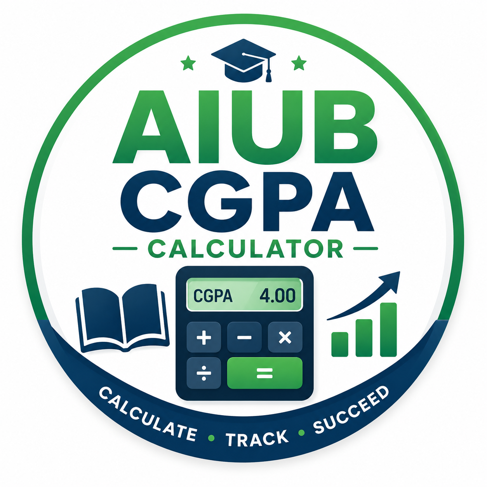
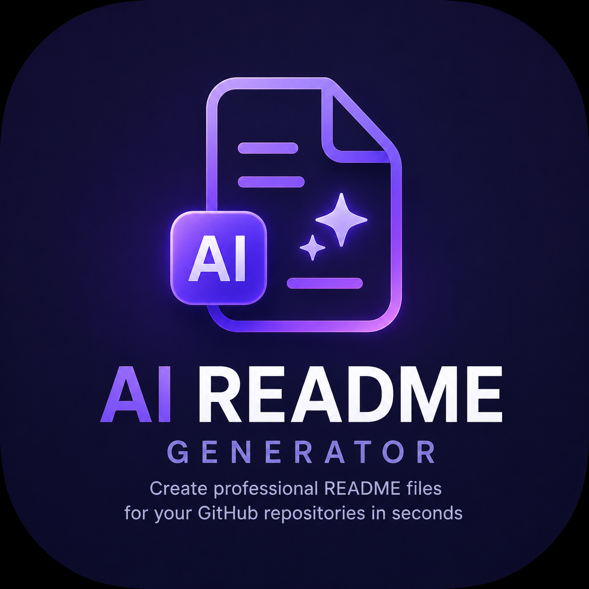
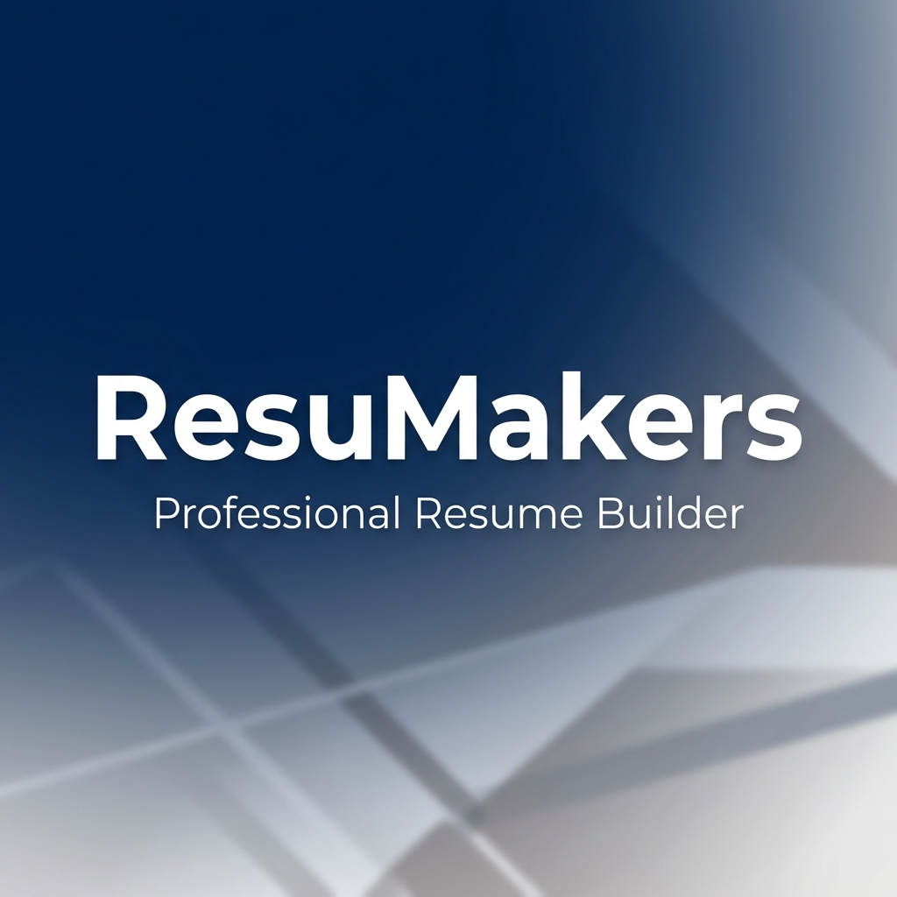

VoiceMenu
The Menu That Talks Back. Transform your tables into AI-powered ordering stations. No hardware, no apps—just a simple QR code and a conversation.
Skills:
- AI Integration
- Next.js
- TypeScript
- Web Development
The Menu That Talks Back. Transform your tables into AI-powered ordering stations. No hardware, no apps—just a simple QR code and a conversation.
Skills:

A comprehensive, professional medical prescription generator designed specifically for Bangladeshi healthcare professionals.
Skills:

A simple client-side web application designed specifically for students of American International University-Bangladesh (AIUB) to calculate semester and cumulative CGPA.
Skills:

Writing README files manually for GitHub repositories can be time-consuming. This AI-powered tool makes README creation fast, easy, and hassle-free.
Skills:

An automatic movie and anime recommendation application that suggests movies and anime based on your mood.
Skills:
A web application built with TypeScript to help users monitor, organize, and manage their daily activities efficiently.
Skills:

The resume that gets you hired. Create professional ATS-friendly resumes in minutes with AI-powered suggestions and modern templates.
Skills: